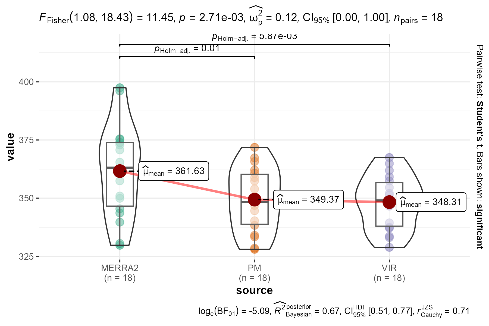
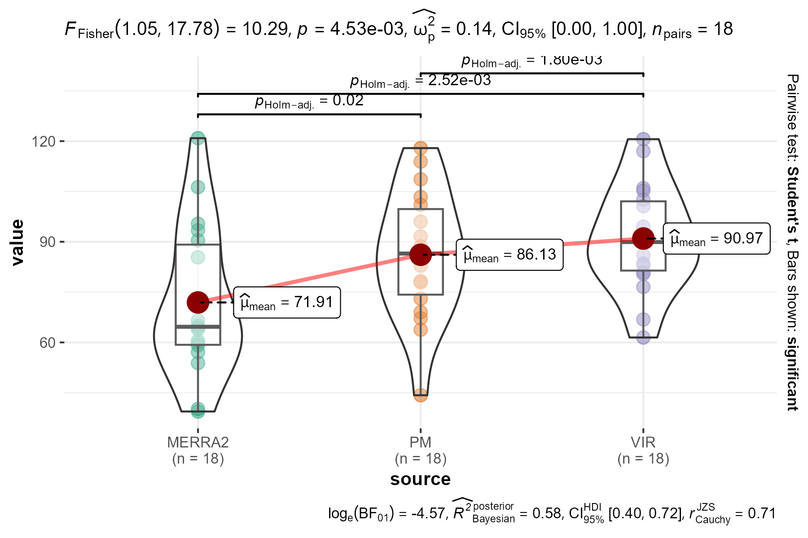

Результаты
Картирование
Фенокарта сроков появления льда представлена на рис. 1. Результаты для сезона 2011/2012 отсутствуют из-за пропуска в исходных данных (Du et al., 2017), а результаты для сезона 2015/2016 исключены из анализа из-за низкого качества в исходных данных, что не позволило провести аппроксимацию пропущенных значений временных рядов.

Рисунок 1 Сроки появления льда
Фенокарта сроков исчезновения льда представлена на рис. 2. Результаты для сезона 2011/2012 отсутствуют из-за пропуска в исходных данных (Du et al., 2017).

Рисунок 2 Сроки исчезновения льда
По разности сроков (дат) исчезновения и появления льда построены карты продолжительности ледового периода (рис. 3). Отсутствие данных (разности карт) для сезонов 2011/2012 и 2015/2016 обусловлено отсутствием любого оператора разности: уменьшаемого или вычитаемого.
Рисунок 3 Продолжительность ледового периода
Анализ фенокарт
По построенным картам проведен статистический анализ каждой ячейки координатной сетки и выделены следующие характеристики: среднемноголетнее значение, стандартное отклонение, линейный тренд и статистическая значимость линейного тренда. На рис. 4 представлены результаты для сроков образования льда, на рис. 5 – для сроков исчезновения льда, на рис. 5 – для продолжительности ледового сезона.
Рисунок 4 Вариабельность и тренды сроков появления льда

Рисунок 5 Вариабельность и тренды сроков исчезновения льда

Рисунок 6 Вариабельность и тренды продолжительности ледового сезона
По исследуемому региону
Ежегодно, в среднем, 63 тыс. км2 (стандартное отклонение 16 тыс. км2) Каспийского моря покрывается льдом не менее чем на 6 дней. Больше всего такого льда было зимой 2005/2006 гг., 81 тыс. км2, а меньше всего – зимой 2019/2020 гг., 23 тыс. км2. Тенденция изменения этой площади составляет -1.0±0.6 тыс. км2 год-1 с умеренной статистической значимостью 90%. За период наблюдений с зимы 2002/2003 по зиму 2021/2022 гг. площадь замерзающей акватории Каспия сократилась на 27% с 73 до 53 тыс. км2 (табл. 4).
Ледообразование (а именно, появление льда) на обычно замерзающей (не менее 9 раз за 10 лет) акватории Каспия происходит, в среднем, 15 декабря (стандартное отклонение 14 дней). Экстремальные значения наблюдались для зим 2020/2021 гг., 23 ноября, и 2010/2011 гг., 07 января. За многолетний период наблюдений отмечается всё более раннее появление льда (-1.0±0.5 дней год-1, S=94%), с 25 декабря зимой 2002/2003 гг. до 06 декабря зимой 2021/2022 гг. (табл. 1).
В среднем, обычно замерзающая акватория Каспийского моря освобождается ото льда 11 марта (стандартное отклонение 14 дней). Наиболее раннее ледотаяние наблюдалось зимой 2019/2020 г., 05 февраля, а наиболее позднее – зимой 2002/2003 г., 01 апреля. За сезоны с 2002/2003 по 2021/2022 гг. отмечается статистически значимая (S=97%) линейная тенденция более раннего исчезновения льда со скоростью 1.1±0.5 дней год-1, с 21 марта в начале исследуемого периода до 28 февраля в конце (табл. 2).
Продолжительность ледового сезона обычно замерзающей акватории Каспийского моря составляет, в среднем, 86 дней (стандартное отклонение 19 дней). По покрытию льдом наиболее долгой была зима 2002/2003 гг., 118 дней, а наиболее короткой – зима 2021/2022 гг., 44 дня. Линейная тенденция изменения длительности ледового периода не обнаруживается: -0.2±0.8 дней год-1, S=16% (табл. 3).
Верификация
Для оценки применимости выбранного набора данных для построения фенокарт (Du et al., 2017) (обозначен как PM) проведено сравнение фенологических характеристик (сроки появления и исчезновения льда) и извлекаемых из них параметров (продолжительность ледового покрова, площадь устойчивого ледоообразования) c наборами данных Global Modeling And Assimilation Office (2015) (обозначен как MERRA2) и Lopez (2019) (обозначен как VIR). Проведено сравнение усредненных по региону фенологических характеристик. Результаты приведены в табл. 1 для сроков появления льда, в табл. 2 для сроков исчезновения льда, в табл. 3 для продолжительности ледового сезона, в табл. 4 для максимальной площади устойчивого ледообразования.

| data | min | max | avg | slope | obs |
|---|---|---|---|---|---|
| PM | 23Nov (2020) | 07Jan (2010) | 15Dec±13.7 | -1.0±0.5 (S=0.94) | 18/20 (2002-2021) |
| MERRA2 | 25Nov (2020) | 01Feb (2002) | 28Dec±19.9 | -2.5±0.5 (S>0.999) | 18/20 (2002-2021) |
| VIR | 24Nov (2020) | 02Jan (2010) | 14Dec±11.5 | -1.0±0.4 (S=0.97) | 18/20 (2002-2021) |
| MERRA2 | 25Nov (2020) | 15Mar (1984) | 10Jan±24.8 | -1.5±0.2 (S>0.999) | 40/44 (1980-2023) |
| VIR | 14Nov (1993) | 02Jan (2010) | 12Dec±11.2 | +0.1±0.2 (S=0.40) | 40/40 (1982-2021) |

При парном сравнении сроков появления льда по исходным данным VIR and PM, в среднем, по PM запаздывание 1.1 суток, по сравнению с VIR, отличия статистически незначимые (18 пар, t-критерий, P=0.25), а сами значения хорошо коррелируют друг с другом (корреляция Пирсона 0.97, F-критерий Фишера, 18 пар, P<0.001). Как и для PM, для VR похожий, статистически значимый, линейный тренд -1.0±0.4 дней год-1, S=97%.
В среднем, сроки появления льда по данным PM на 12 дней раньше, чем по данным MERRA2 (статистически значимое отличие, t-критерий, 18 пар, P=0.005, с поправкой Холма-Бонферрони 0.006), коэффициент корреляции Пирсона 0.58 не очень высокий, но статистически значимый (F-критерий Фишера, 18 пар, P=0.01).
При сравнении сроков появления льда по данным VIR and MERRA2 в те же сезоны, для которых получены оценки PM, MERRA2, в среднем, запаздывает на 13 суток (18 пар, t-критерий, P=0.002, с поправкой Холма-Бонферрони 0.01). Корреляция Пирсона 0.63 (F-критерий Фишера, 18 пар, P=0.005). При рассмотрении полного периода, с сезона 1981/1982 запаздывание MERRA2, по сравнению с VIR, составляет около 29 дней (t-критерий, 37 пар, P<0.001), и наиболее заметные отличия приходятся до сезона 2002/2003. коэффициент корреляции Пирсона 0.14 (F-критерий Фишера, 37 пар, P=0.41).
По данным MERRA за 40 и 44 возможных сезонов наблюдений с 1980/1981 по 2023/2024 отмечается статистически значимый отрицательный (появление льда с каждым годом раньше) линейный тренд -1.5±0.2 дней год-1, S>99.9% (табл. 1).

| data | min | max | avg | slope | obs |
|---|---|---|---|---|---|
| PM | 05Feb (2020) | 01Apr (2003) | 11Mar±13.5 | -1.1±0.5 (S=0.97) | 18/20 (2003-2022) |
| MERRA2 | 22Feb (2020) | 26Mar (2021) | 09Mar±8.6 | +0.0±0.3 (S=0.10) | 18/20 (2003-2022) |
| VIR | 19Feb (2022) | 30Mar (2003) | 14Mar±11.1 | -0.7±0.4 (S=0.91) | 18/20 (2003-2022) |
| MERRA2 | 19Feb (2000) | 03Apr (1985) | 13Mar±11.3 | -0.4±0.1 (S>0.99) | 41/45 (1980-2024) |
| VIR | 16Feb (2000) | 01Apr (2012) | 16Mar±11.9 | -0.4±0.1 (S=0.99) | 40/41 (1982-2022) |

Исчезновение льда по данным PM, в среднем, на 2.4 суток раньше, чем по данным VIR (18 пар, t-критерий Стьюдента, P=0.015, c поправкой Холма-Бонферрони 0.03). Это смещение систематическое, так как коэффициент корреляции Пирсона очень высокий (0.97, F-критерий Фишера, 18 пар, P<0.001). По данным VIR, так же как и для PM, отмечается отрицательный линейный тренд, но его абсолютное значение несколько меньше, а статистическая значимость – ниже (-0.7±0.4 дней год-1, S=91%, табл. 2). Для двух экстремально ранних исчезновений льда в сезоны 2019/2020 и 2021/2022 оценки по данным PM были раньше оценок по данным VIR. Третий экстремально ранний экстремум таяния льда также оценён по данным PM в сезоне 2015/2016, но для этого сезона данные VIR отсутствовали.
Среднемноголетние сроки исчезновения льда по данным PM на 1.3 суток позднее, чем по данным MERRA2, и это отличие не статистически значимое (19 пар, t-критерий Стьюдента, P=0.57). В целом, смещённость оценок умеренная, значение коэффициента корреляции Пирсона составляет 0.76 (F-критерий Фишера, 19 пар, P<0.001). По данным MERRA2 в эпоху PM не обнаруживается линейная тенденция изменения сроков исчезновения льда (+0.0±0.3 дней год-1, S=10%, табл. 2).
При сравнении сроков исчезновения льда по данным VIR and MERRA2 в эпоху PM средняя разность оценок VIR and MERRA2 статистически значимая и составляет 4.2 суток (18 пар, t-критерий Стьюдента, P=0.01, c поправкой Холма-Бонферрони 0.03). Коэффициент корреляции Пирсона достаточно высокий (0.82, F-критерий Фишера, 18 пар, P<0.001). При рассмотрении всех имеющихся пар оценок VIR and MERRA2 c начала 1980-х средняя разность VIR and MERRA 2.4 суток (36 пар, t-критерий Стьюдента, P=0.02), а коэффициент корреляции Пирсона 0.86 (F-критерий Фишера, 36 пар, P<0.001). При этом линейная тенденция за этот период по обоим наборам данных схожая и, к тому же, статистически значимая: -0.4±0.1 год-1 (S>99%) для MERRA2 и -0.4±0.1 год-1 (S=99%) для VIR.

| data | min | max | avg | slope | obs |
|---|---|---|---|---|---|
| PM | 44 (2022) | 118 (2003) | 86±19 | -0.2±0.8 (S=0.16) | 18/20 (2003-2022) |
| MERRA2 | 39 (2003) | 121 (2021) | 72±22 | +2.6±0.6 (S>0.999) | 18/20 (2003-2022) |
| VIR | 61 (2022) | 121 (2021) | 91±16 | +0.2±0.6 (S=0.26) | 18/20 (2003-2022) |
| MERRA2 | 19 (1985) | 121 (2021) | 62±24 | +1.1±0.2 (S>0.999) | 40/44 (1981-2024) |
| VIR | 61 (2022) | 137 (1994) | 96±18 | -0.4±0.2 (S=0.89) | 39/40 (1983-2022) |

Продолжительность устойчивой ледовитости по данным PM, в среднем, составляет 86 дней, а по данным VIR за тот же период - 91 день. Усредненная разность – 4.8 дней – является статистически значимой (18 пар, t-критерий Стьюдента, P<0.001, c поправкой Холма-Бонферрони – 0.002), но при этом коэффициент корреляции Пирсона составляет 0.98 (F-критерий Фишера, 18 пар, P<0.001), что свидетельствует о смещённости оценок. По обоим наборам данным не отмечается статистически значимой тенденции изменения продолжительности ледового периода.
Средняя продолжительность устойчивой ледовитости по данным MERRA2 в эпоху PM составляет 72 дня; это почти на 14 дней короче, чем по данным PM (18 пар, t-критерий Стьюдента, P=0.02, c поправкой Холма-Бонферрони – 0.02). Коэффициент корреляции Пирсона 0.34 между 18 парами этих оценок статистически не значимый (F-критерий Фишера, P=0.17) и не свидетельствует о смещённости оценок. По данным MERRA2 в эпоху PM обнаруживается статистически значимая линейная тенденция удлинения ледового периода со скоростью -2.6±0.6 дней год-1, S>99.9% (табл. 3).
Продолжительность ледового сезона по данным MERRA2 на 19 суток в эпоху PM (18 пар, t-критерий Стьюдента, P=0.001, c поправкой Холма-Бонферрони – 0.003) и на 34 суток в перекрывающийся период (36 пар, t-критерий Стьюдента, P<0.001) меньше, чем по данным VIR. При этом наибольший систематический сдвиг – до начала периода оценок PM, когда любая оценка по данным MERRA2 более чем на три недели меньше оценки по данным VIR. В эпоху PM отмечается пятилетний период с 2005/2006 по 2009/2010 высокой разности оценок VIR and MERRA2, но она не такая высокая, как в эпоху до PM оценок. Коэффициенты корреляции Пирсона статистически не значимые: 0.43 в эпоху PM (F-критерий Фишера, 18 пар, P=0.07) и 0.23 в перекрывающийся период (F-критерий Фишера, 36 пар, P=0.18). По данным MERRA2 наблюдается статистически значимый тренд увеличения продолжительности сезона устойчивой ледовитости за период c 1980/1981 по 2023/2024: +1.1±0.2 дней год-1, S>99.9%, по 40 из 44 оценкам (табл. 3).

| data | min | max | avg | slope | obs |
|---|---|---|---|---|---|
| PM | 23 (2020) | 81 (2006) | 63±16 | -1.0±0.6 (S=0.90) | 18/20 (2003-2022) |
| MERRA2 | 35 (2004) | 79 (2017) | 58±13 | +1.4±0.4 (S>0.99) | 18/20 (2003-2022) |
| VIR | 53 (2004) | 81 (2006) | 72±8 | -0.2±0.3 (S=0.43) | 18/20 (2003-2022) |
| MERRA2 | 35 (2004) | 79 (2017) | 62±12 | -0.1±0.2 (S=0.37) | 40/44 (1981-2024) |
| VIR | 53 (2004) | 82 (2012) | 74±7 | -0.2±0.1 (S=0.92) | 39/40 (1983-2022) |

Максимальная площадь устойчивой ледовитости по данным PM, в среднем, на 9.2 тыс. км2 меньше, чем по данным VIR (18 пар, t-критерий Стьюдента, P<0.001, c поправкой Холма-Бонферрони – <0.001). Коэффициент корреляции Пирсона между этими оценками высок (0.94, F-критерий Фишера, 18 пар, P<0.001).
Средняя разность между площадями, покрываемыми льдом, по данным PM and по данным MERRA2 составляет 4.8 тыс. км2 (18 пар, t-критерий Стьюдента, P=0.25). Коэффициент корреляции Пирсона 0.32 (F-критерий Фишера, 18 пар, P=0.20). В эпоху PM статистически значимый тренд ледовитости по данным MERRA2 +1.4±0.4 тыс. км2 год-1, S>99% (табл. 4).
По данным MERRA2 недооценка площади акватории, покрываемой льдом минимум на шесть суток, минимальна. Отличия от VIR в эпоху PM составляют -14 тыс. км2 (18 пар, t-критерий Стьюдента, P<0.001), коэффициент корреляции Пирсона 0.50 (F-критерий Фишера, 18 пар, P=0.03), что, в целом, не выделяет согласованности между этими данными. Недооценка MERRA2, по сравнению с VIR, в полный период перекрытия с начала 1980-х составляет, в среднем, -13 тыс. км2 (36 пар, t-критерий Стьюдента, P<0.001), коэффициент корреляции Пирсона оценок составляет 0.62 (F-критерий Фишера, 36 пар, P<0.001).
По данным PM отмечается значительная недооценка площади для сезонов 2019/2020 и 2021/2022.